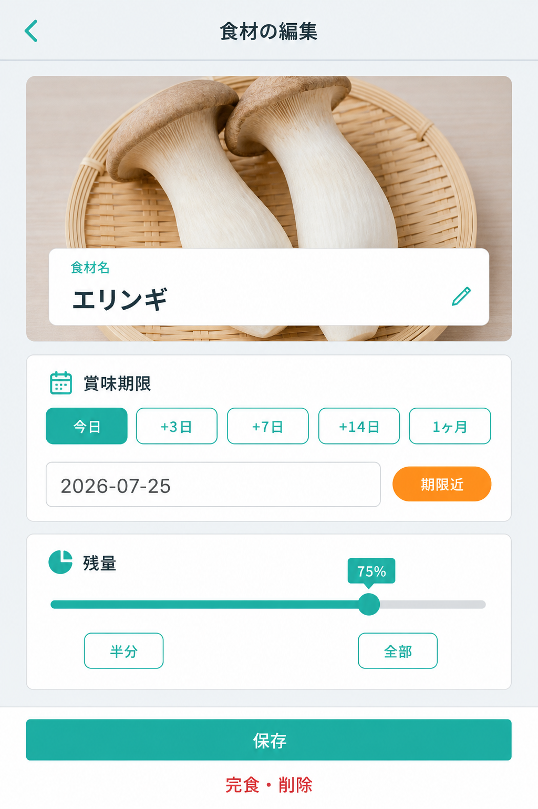
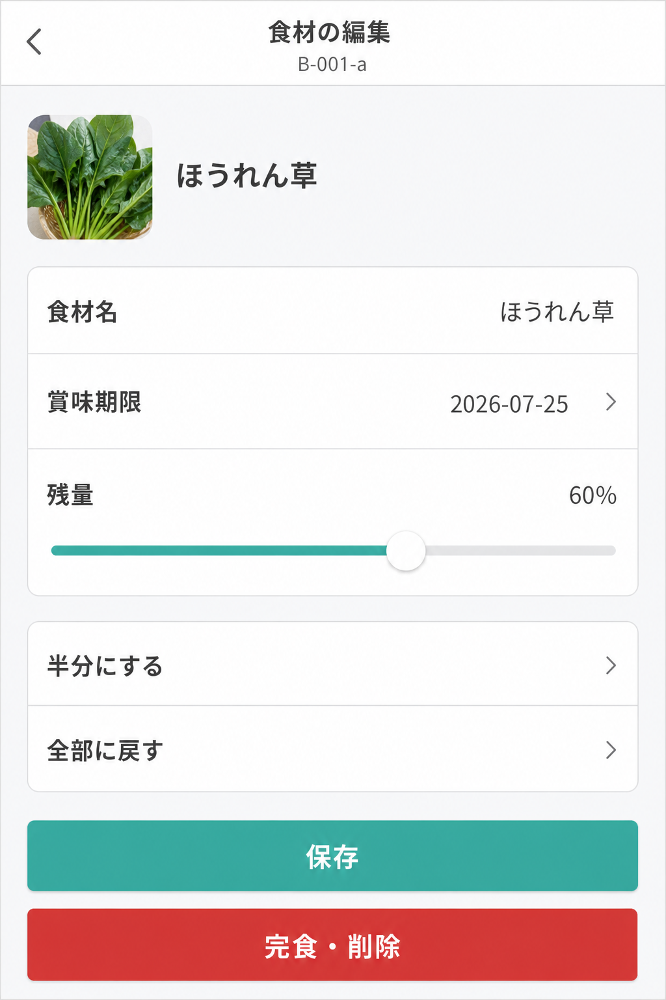
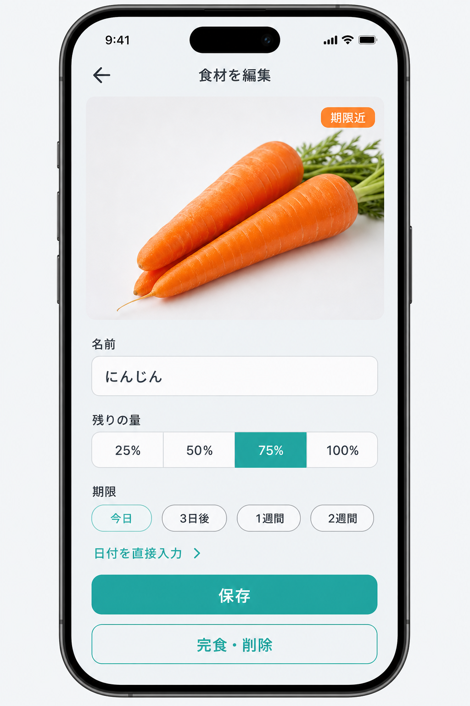
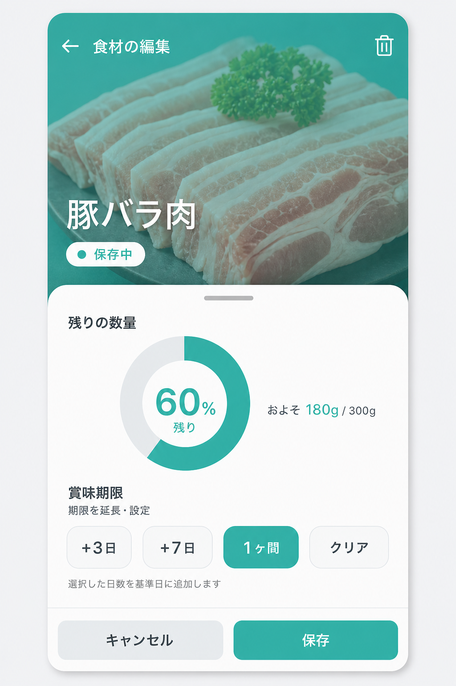
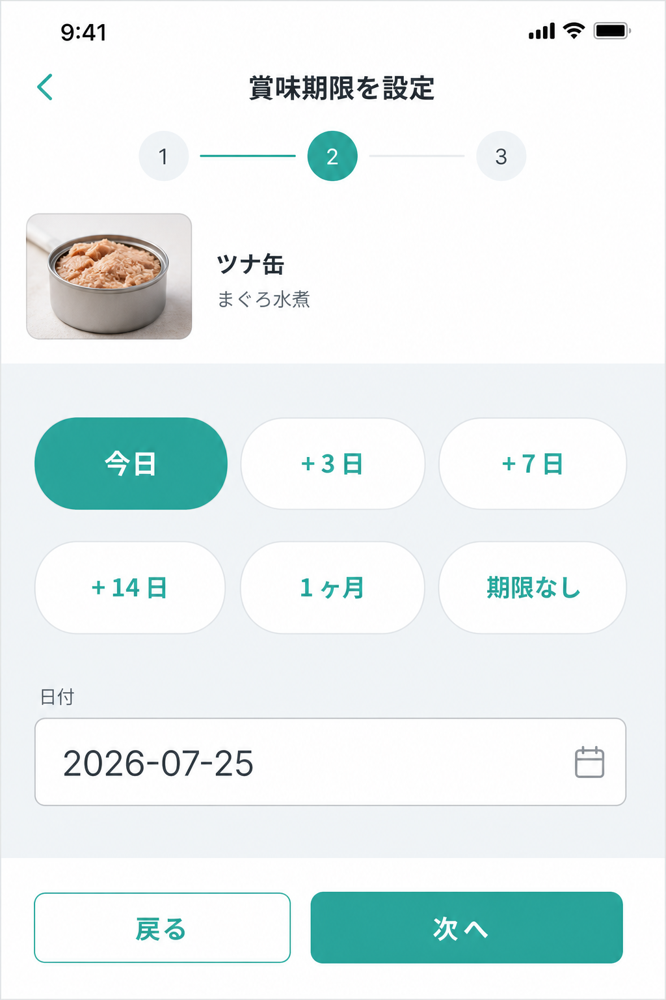
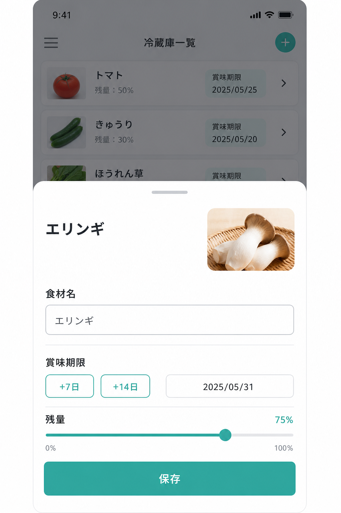
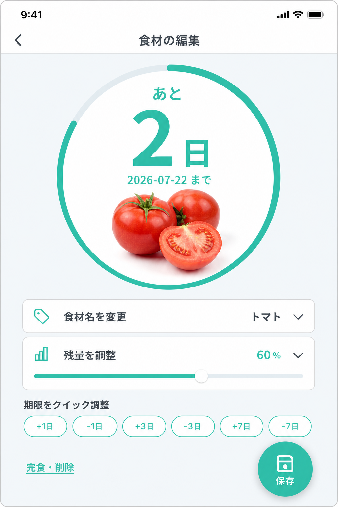
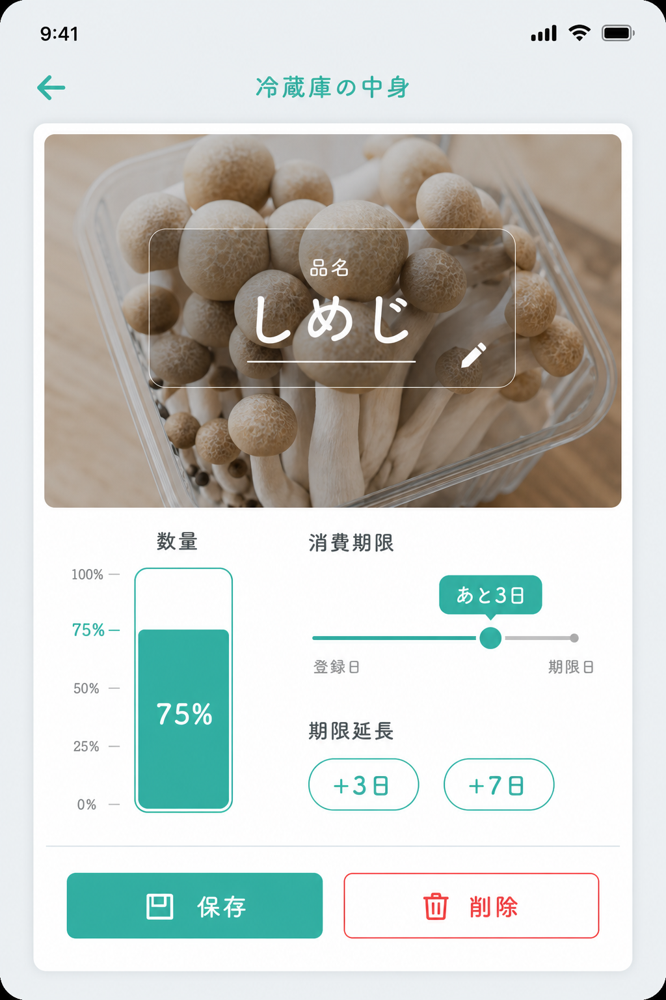

案 A：セクションカード型
ヒーロー + 期限チップ + 残量スライダー

- 情報の塊が分かりやすい
- 手入力を減らせる
IngredientEditScreen · Design D1 · カレンダー UI なし（チップ / スライダー / 直接入力）
ヒーロー + 期限チップ + 残量スライダー

iOS Settings 風の行 UI

25/50/75/100% + 期限チップ

上半分で食材、下半分で残量リング + 期限チップ

名前 → 期限（チップ）→ 残量

一覧を薄く残して下から編集

「あと N 日」を主役に

B-001 のカードをそのまま拡大

このファイルをブラウザで開くと全画像が表示されます。
docks/mockups/b001-a-edit/index.html